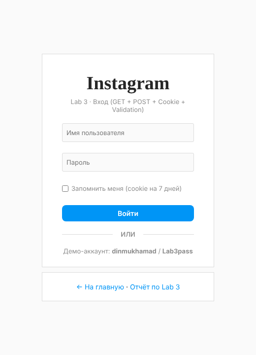
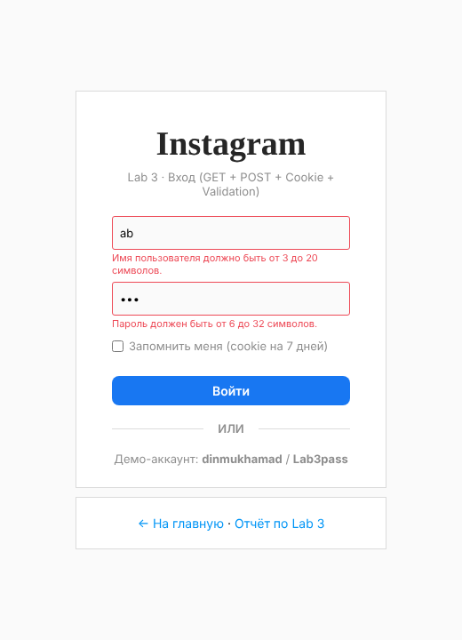
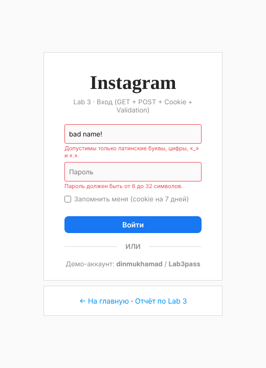
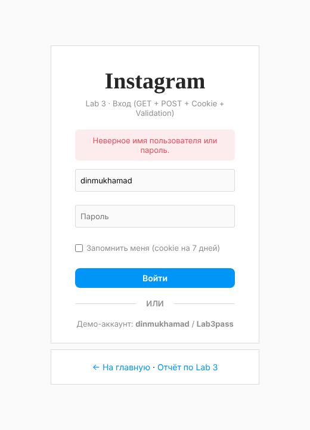
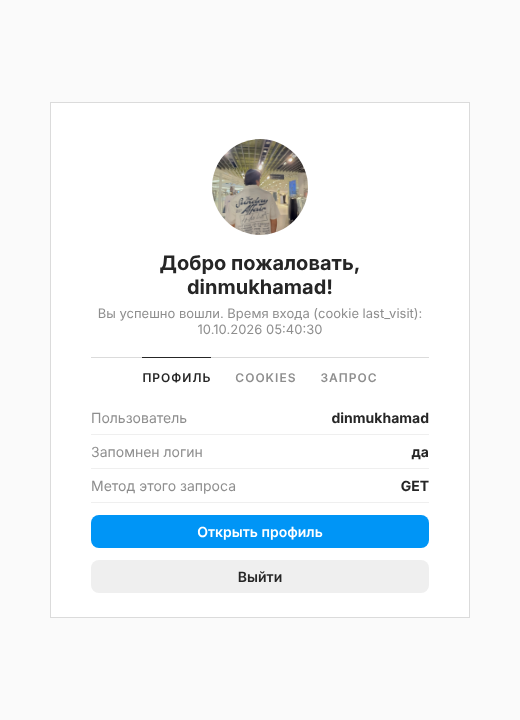
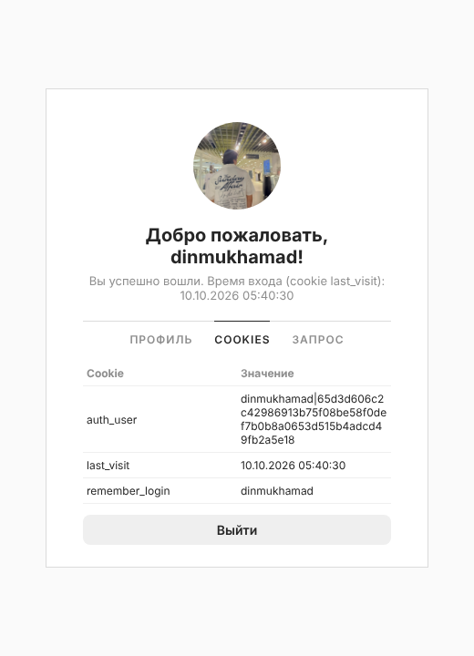
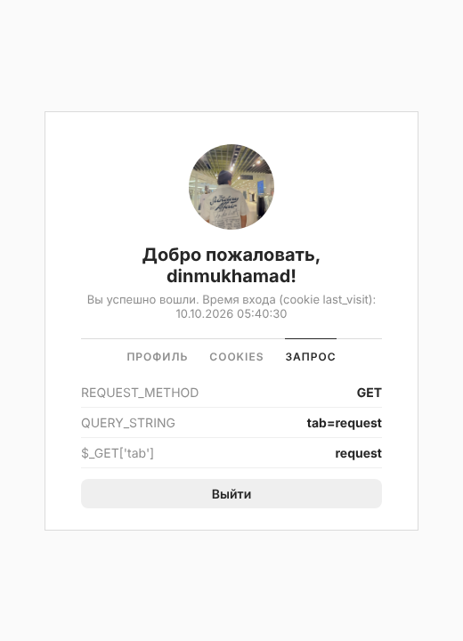
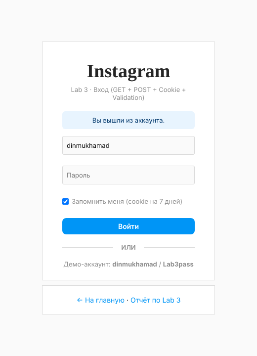
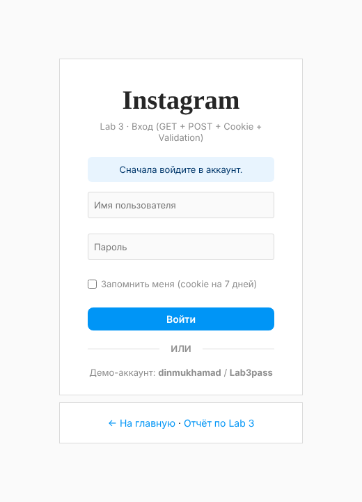

Создать на своём сайте страницу авторизации, которая:
| GET | POST | |
|---|---|---|
| Где передаются данные | В строке URL: ?tab=cookies | В теле HTTP-запроса |
| Видимость | Видны в адресной строке, истории, логах | Не видны в URL |
| Назначение | Получение данных, без изменения состояния | Отправка данных, изменение состояния (вход, выход) |
| В PHP | $_GET | $_POST |
| В лабораторной | Показ формы, ?logout=1, ?error=auth, ?username=, вкладки ?tab= | Отправка логина и пароля, выход (logout.php) |
Пароль никогда не передаётся через GET, иначе он попадёт в историю браузера и логи сервера.
Cookie — небольшие данные, которые сервер передаёт браузеру заголовком Set-Cookie, а браузер возвращает их в каждом следующем запросе заголовком Cookie. В PHP cookie устанавливаются функцией setcookie() и читаются из $_COOKIE.
| Cookie | Значение | Срок | Зачем |
|---|---|---|---|
auth_user | логин|HMAC-подпись | До закрытия браузера | Признак входа. Подпись не даёт подделать cookie вручную. |
remember_login | логин | 7 дней | Автозаполнение поля «Имя пользователя» (галочка «Запомнить меня»). |
last_visit | дата и время входа | 7 дней | Показывается на странице после входа. |
Все cookie ставятся с флагами HttpOnly (недоступны из JavaScript) и SameSite=Lax (защита от CSRF).
Клиентская (JavaScript) — даёт мгновенную подсказку, но её легко обойти. Серверная (PHP) — обязательна, потому что именно она защищает приложение. В работе используются одинаковые правила на обеих сторонах:
a–z A–Z 0–9 _ .password_verify().web_labs/
├── index.html главная страница сайта (ссылка на Lab 3 в меню)
└── lab3/
├── config.php пользователь, функции cookie, валидация
├── login.php форма входа: GET — показ, POST — проверка
├── welcome.php защищённая страница (проверяет cookie), вкладки ?tab=
├── logout.php выход (только POST), удаляет auth-cookie
├── login.js клиентская валидация
├── login.css стили в стиле Instagram
├── report.html этот отчёт
└── screenshots/ скриншотыif ($_SERVER['REQUEST_METHOD'] === 'POST') {
$username = trim((string)($_POST['username'] ?? ''));
$password = (string)($_POST['password'] ?? '');
$remember = isset($_POST['remember']);
$errors = validate_login($username, $password);
if (!$errors) {
$hash = USERS[$username] ?? null;
if ($hash === null || !password_verify($password, $hash)) {
$errors['form'] = 'Неверное имя пользователя или пароль.';
}
}
if (!$errors) {
set_app_cookie(AUTH_COOKIE, sign_user($username));
set_app_cookie(VISIT_COOKIE, date('d.m.Y H:i:s'), time() + REMEMBER_TTL);
$remember
? set_app_cookie(REMEMBER_COOKIE, $username, time() + REMEMBER_TTL)
: delete_app_cookie(REMEMBER_COOKIE);
redirect('welcome.php?tab=profile'); // Post/Redirect/Get
}
} else {
// GET: автозаполнение логина из ?username= или из cookie
$username = trim((string)($_GET['username'] ?? ($_COOKIE[REMEMBER_COOKIE] ?? '')));
if (isset($_GET['logout'])) $notice = 'Вы вышли из аккаунта.';
elseif (($_GET['error'] ?? '') === 'auth') $notice = 'Сначала войдите в аккаунт.';
}После успешного POST выполняется перенаправление (шаблон Post/Redirect/Get), поэтому обновление страницы не отправляет форму повторно.
function set_app_cookie(string $name, string $value, int $expires = 0): void
{
setcookie($name, $value, [
'expires' => $expires,
'path' => '/',
'httponly' => true,
'samesite' => 'Lax',
'secure' => !empty($_SERVER['HTTPS']) && $_SERVER['HTTPS'] !== 'off',
]);
}
function sign_user(string $username): string
{
return $username . '|' . hash_hmac('sha256', $username, COOKIE_SECRET);
}
function current_user(): ?string
{
$raw = $_COOKIE[AUTH_COOKIE] ?? '';
if (!is_string($raw) || !str_contains($raw, '|')) return null;
[$username, $signature] = explode('|', $raw, 2);
$expected = hash_hmac('sha256', $username, COOKIE_SECRET);
if (!hash_equals($expected, $signature) || !isset(USERS[$username])) return null;
return $username;
}function validate_login(string $username, string $password): array
{
$errors = [];
if ($username === '') {
$errors['username'] = 'Введите имя пользователя.';
} elseif (mb_strlen($username) < 3 || mb_strlen($username) > 20) {
$errors['username'] = 'Имя пользователя должно быть от 3 до 20 символов.';
} elseif (!preg_match('/^[a-zA-Z0-9_.]+$/', $username)) {
$errors['username'] = 'Допустимы только латинские буквы, цифры, «_» и «.».';
}
if ($password === '') {
$errors['password'] = 'Введите пароль.';
} elseif (mb_strlen($password) < 6 || mb_strlen($password) > 32) {
$errors['password'] = 'Пароль должен быть от 6 до 32 символов.';
} elseif (!preg_match('/[A-Za-z]/', $password) || !preg_match('/\d/', $password)) {
$errors['password'] = 'Пароль должен содержать хотя бы одну букву и одну цифру.';
}
return $errors;
}form.addEventListener('submit', (event) => {
const okUser = validateField('username');
const okPass = validateField('password');
if (!okUser || !okPass) {
event.preventDefault(); // форма не уходит на сервер
}
});$user = current_user();
if ($user === null) {
redirect('login.php?error=auth');
}
// GET-параметр tab проверяется по белому списку
$tabs = ['profile' => 'Профиль', 'cookies' => 'Cookies', 'request' => 'Запрос'];
$tab = (string)($_GET['tab'] ?? 'profile');
if (!array_key_exists($tab, $tabs)) {
$tab = 'profile';
}password_hash / password_verify).htmlspecialchars (защита от XSS).hash_equals.logout.php возвращает 405.| # | Действие | Ожидаемый результат | Итог |
|---|---|---|---|
| 1 | GET login.php | Форма входа, код 200 | ✓ Пройден |
| 2 | GET welcome.php без cookie | 302 → login.php?error=auth | ✓ Пройден |
| 3 | POST с пустыми полями | «Введите имя пользователя.», «Введите пароль.» | ✓ Пройден |
| 4 | POST username=ab<script, password=abc | Ошибки формата, значение экранировано | ✓ Пройден |
| 5 | POST с неверным паролем | «Неверное имя пользователя или пароль.» | ✓ Пройден |
| 6 | POST с верными данными + «Запомнить меня» | 3 заголовка Set-Cookie, 302 → welcome.php | ✓ Пройден |
| 7 | GET welcome.php?tab=cookies | Таблица cookie | ✓ Пройден |
| 8 | GET welcome.php?tab=evil | Открывается вкладка «Профиль» | ✓ Пройден |
| 9 | Поддельная cookie auth_user=dinmukhamad|deadbeef | 302 → login.php?error=auth | ✓ Пройден |
| 10 | GET logout.php | 405 Method Not Allowed | ✓ Пройден |
| 11 | POST logout.php | auth-cookie удалена, 302 → login.php?logout=1 | ✓ Пройден |
| 12 | GET login.php?logout=1 после выхода | «Вы вышли из аккаунта.», логин подставлен из cookie | ✓ Пройден |







?tab=request

Страницы входа написаны на PHP, поэтому нужен сервер с PHP (≥ 8.0). Локально:
cd web_labs
php -S localhost:8000
# открыть http://localhost:8000/lab3/login.php
# демо-аккаунт: dinmukhamad / Lab3passphp -S или на любом PHP-хостинге).В ходе работы была создана страница авторизации для сайта. Разобрана разница между методами GET и POST: GET используется для получения страниц и передачи неконфиденциальных параметров (сообщения, вкладки), POST — для отправки логина и пароля и для выхода. Состояние входа хранится в подписанной cookie, а функция «Запомнить меня» реализована через cookie со сроком жизни 7 дней. Введённые данные проверяются дважды: в браузере (JavaScript) для удобства пользователя и на сервере (PHP) для безопасности. Все 12 тестовых сценариев пройдены.